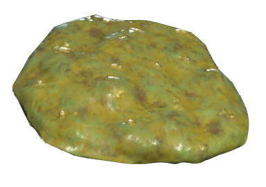

Fallout76 - Mud Cookie 'A baked good invented by Delbert Winters using post-War ingredients. Despite its unappetizing appearance, consuming it will give one a burst of energy'  Ingredients: 12-ounces imperial chocolate milk stout ½ cup brown sugar 1 cup sugar 1 cup unsalted butter, room temperature 1 egg 2 ⅓ cups all-purpose flour 3 cups rolled oats 1 tsp baking powder 1 tsp salt ½ tsp cardamom 2 cups dark chocolate chips Preparation Steps: -Combine the beer and brown sugar in a saucepan. Heat over medium-high heat and bring to a slight boil. Reduce the heat to low and simmer for 20 minutes or until the liquid reduces by half. Take off the heat and allow to cool completely. -Preheat an oven to 350°F. In a small bowl, combine the all-purpose flour, rolled oats, baking powder, salt, and cardamom. Set aside. -In another bowl, place the butter and mix until smooth. Add the sugar to the butter and mix until smooth. Add the beer and sugar mixture. -Add the egg to the mixture and mix. Slowly mix in the flour mixture until it just comes together. Add the chocolate chips and fold them in. -Take about a tablespoon of the dough at a time, place on a baking sheet and press down slightly into a cookie shape. Place in the oven to bake for 13-16 minutes. Enjoy!